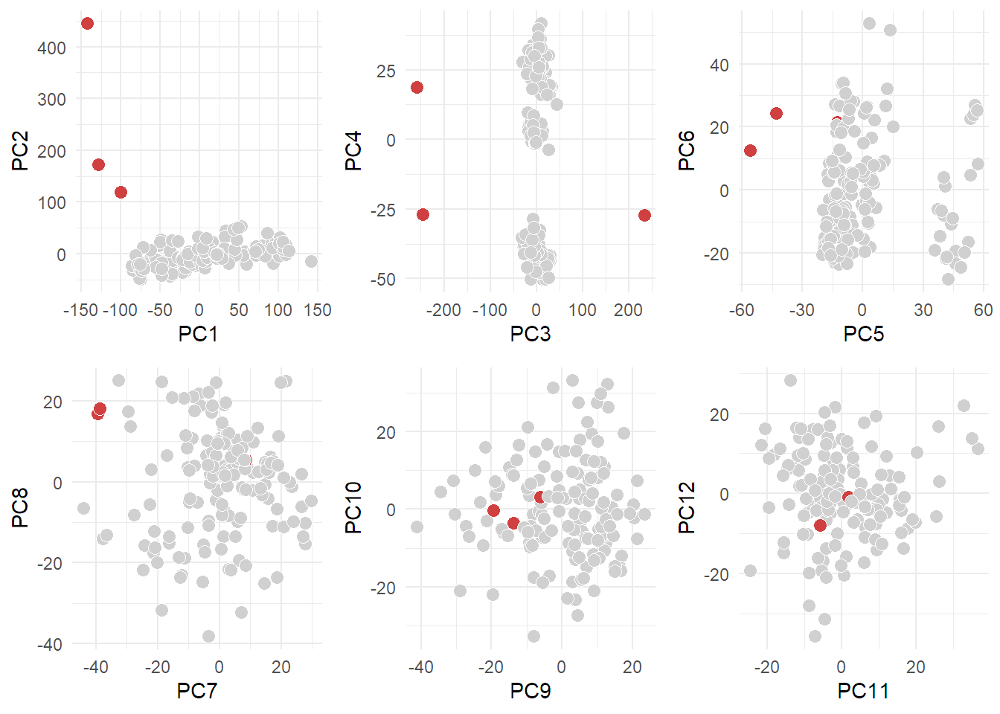

models_tests
Marc
25/2/2022
Last updated: 2022-02-28
Checks: 7 0
Knit directory: workflowr/data/
This reproducible R Markdown analysis was created with workflowr (version 1.6.2). The Checks tab describes the reproducibility checks that were applied when the results were created. The Past versions tab lists the development history.
Great! Since the R Markdown file has been committed to the Git repository, you know the exact version of the code that produced these results.
Great job! The global environment was empty. Objects defined in the global environment can affect the analysis in your R Markdown file in unknown ways. For reproduciblity it’s best to always run the code in an empty environment.
The command set.seed(20220214) was run prior to running the code in the R Markdown file. Setting a seed ensures that any results that rely on randomness, e.g. subsampling or permutations, are reproducible.
Great job! Recording the operating system, R version, and package versions is critical for reproducibility.
Nice! There were no cached chunks for this analysis, so you can be confident that you successfully produced the results during this run.
Great job! Using relative paths to the files within your workflowr project makes it easier to run your code on other machines.
Great! You are using Git for version control. Tracking code development and connecting the code version to the results is critical for reproducibility.
The results in this page were generated with repository version 4bb2b2d. See the Past versions tab to see a history of the changes made to the R Markdown and HTML files.
Note that you need to be careful to ensure that all relevant files for the analysis have been committed to Git prior to generating the results (you can use wflow_publish or wflow_git_commit). workflowr only checks the R Markdown file, but you know if there are other scripts or data files that it depends on. Below is the status of the Git repository when the results were generated:
Ignored files:
Ignored: .Rhistory
Ignored: .Rproj.user/
Ignored: analysis/preprocessing_thesis_cache/
Untracked files:
Untracked: data/TraceAge_bloodspots_t3_neg_clean.csv
Untracked: data/TraceAge_bloodspots_t3_pos_clean.csv
Note that any generated files, e.g. HTML, png, CSS, etc., are not included in this status report because it is ok for generated content to have uncommitted changes.
These are the previous versions of the repository in which changes were made to the R Markdown (analysis/models_tests.Rmd) and HTML (docs/models_tests.html) files. If you’ve configured a remote Git repository (see ?wflow_git_remote), click on the hyperlinks in the table below to view the files as they were in that past version.
| File | Version | Author | Date | Message |
|---|---|---|---|---|
| Rmd | 4bb2b2d | marcsole96 | 2022-02-28 | test |
| html | f7fc4fe | marcsole96 | 2022-02-25 | Build site. |
| Rmd | b6c47cb | marcsole96 | 2022-02-25 | tet |
| html | e73936f | marcsole96 | 2022-02-25 | Build site. |
| Rmd | e5bedbe | marcsole96 | 2022-02-25 | models |
Libraries
Data loading
#setwd("../workflowr/data")
mdf <- read_csv("TraceAge_bloodspots_t3_pos_clean.csv")
-- Column specification --------------------------------------------------------
cols(
.default = col_double(),
sample = col_character(),
batch = col_character(),
type = col_character(),
sample_id = col_character()
)
i Use `spec()` for the full column specifications.#mdf<-mdf %>% gather(key="mz",value="values",6:ncol(mdf)) %>% spread(mz,values)Simplest model ever
No transformation or BN is performed in this data
PCAs for data visualization
pca_df<-mdf %>% filter(type=="sample")
pr.out <- prcomp(pca_df[,6:(ncol(mdf))], scale. = TRUE)Scree Plot
var_explained_df <- data.frame(PC= as.numeric(paste0(1:150)),
var_explained=(pr.out$sdev)^2/sum((pr.out$sdev)^2))
var_explained_df %>%
ggplot(aes(x=PC,y=var_explained, group=1))+
geom_point()+
geom_line()+
labs(title="Scree plot: PCA on scaled data")
var_explained_df %>%
ggplot(aes(x=PC,y=var_explained))+
geom_col()+
labs(title="Scree plot: PCA on scaled data")
sum(var_explained_df$var_explained[1:11])[1] 0.6568698Plotting the first 12 PCs since they explain ~65% of the data
p1<-autoplot(pr.out, data = pca_df, colour = 'age', shape="batch", size=2, x = 1, y =2)Warning: `select_()` was deprecated in dplyr 0.7.0.
Please use `select()` instead.
This warning is displayed once every 8 hours.
Call `lifecycle::last_warnings()` to see where this warning was generated.p2<-autoplot(pr.out, data = pca_df, colour = 'age', shape="batch", size=2, x = 3, y =4)
p3<-autoplot(pr.out, data = pca_df, colour = 'age', shape="batch", size=2, x = 5, y =6)
p4<-autoplot(pr.out, data = pca_df, colour = 'age', shape="batch", size=2, x = 7, y =8)
p5<-autoplot(pr.out, data = pca_df, colour = 'age', shape="batch", size=2, x = 9, y =10)
p6<-autoplot(pr.out, data = pca_df, colour = 'age', shape="batch", size=2, x = 11, y =12)
cowplot::plot_grid(p1,p2,p3,p4,p5,p6)
Identifying the possible outliers
raw <- mdf[6:(ncol(mdf))]
rowinfo <- mdf[0:5]
rowinfo <- tibble::rowid_to_column(rowinfo, "rowid")
tmp1 <- rowinfo %>% filter(type %in% c("sample")) %>% mutate(rowid2 = row_number())
tmp2 <- raw[tmp1$rowid,]
r <- prcomp(x = tmp2, retx = T, center=T, scale. = T, rank. = 12)
bad_rows <- tibble(rowid2=apply(r$x, 2, function(x) {
which(abs(x - median(x)) > (1.5 * quantile(x,0.95)-quantile(x,0.05)))
}) %>%
unlist() %>%
as.vector()) %>%
count(rowid2)
tmp1 <- tmp1 %>%
left_join(bad_rows) %>%
mutate(n=ifelse(is.na(n), 0,n)) %>%
mutate(label=ifelse(n>0, rowid, "")) %>%
{.}Joining, by = "rowid2"pd <- r$x %>%
as_tibble() %>%
bind_cols(tmp1) %>%
{.}
pd <- pd %>%
mutate(response = ifelse(n>0,"Outlier", "Not outlier")) %>%
mutate(response = factor(response))
plotlist <- list()
for(i in 1:(ncol(r$x)/2)) {
xvar <- names(pd)[2*i-1]
yvar <- names(pd)[2*i]
p1 <- ggplot(pd,aes(x=!!ensym(xvar), y=!!ensym(yvar),
fill=response, label=label))+
geom_point(shape=21, color="#FFFFFFFF", size=3) +
scale_fill_manual(values = c("#D0D0D0", "#D04040")) +
theme(legend.position="none") +
NULL
plotlist[[length(plotlist)+1]] <- p1
rm(p1)
}
cowplot::plot_grid(plotlist = plotlist)
Make a Training/Test from the data and try regression on age
training_DF <- mdf %>% select(-sample,-batch,-type,-sample_id)
training_DF[is.na(training_DF)] <- 0
training_x <- training_DF %>% select(-age) %>% as.data.frame()
training_y <- training_DF$ageChoosing a good model to make the comparisons and storing the RMSE somehow
#Making an empty DF
tunelengths <- data.frame(TrainRMSE = as.numeric(),TrainRsquared = as.numeric(),TrainMAE = as.numeric(),method = as.character(),Name = as.character(),QC = as.character())
#Making a loop to choose the best tunelength (This method could also be applied if I decide to try different models, and I want to compare them)
set.seed(1)
for (i in c(1:15)){
trControl <- trainControl(method = "repeatedcv", number = 10, verboseIter = F, savePredictions = "final")
fit1 <- train(x = training_x,
y = training_y,
method = "glmnet",
tuneLength = i,
trControl = trControl,
metric = 'RMSE'
)
tunelengths[i-1,] = data.frame(getTrainPerf(fit1), Name = paste0("tunelength", i-1), QC = "none")
}
tunelengths TrainRMSE TrainRsquared TrainMAE method Name QC
1 3.133430 0.9723428 1.909843 glmnet tunelength1 none
2 3.025438 0.9703265 1.918300 glmnet tunelength2 none
3 3.025596 0.9765107 1.932553 glmnet tunelength3 none
4 2.996690 0.9728342 1.869118 glmnet tunelength4 none
5 3.194576 0.9690728 1.973425 glmnet tunelength5 none
6 2.812739 0.9719760 1.746516 glmnet tunelength6 none
7 3.015883 0.9731369 1.896496 glmnet tunelength7 none
8 3.023017 0.9693144 1.884916 glmnet tunelength8 none
9 2.900207 0.9648617 1.929616 glmnet tunelength9 none
10 2.934679 0.9789295 1.931391 glmnet tunelength10 none
11 3.041375 0.9692623 1.931623 glmnet tunelength11 none
12 2.966246 0.9726934 1.895636 glmnet tunelength12 none
13 3.084821 0.9768986 1.877747 glmnet tunelength13 none
14 2.981465 0.9767121 1.851715 glmnet tunelength14 noneThe tuneLength doesn’t make the RMSE change much. I will stay with GLMNET and a tunelength of 5.
Making a simple model and storing the RMSE
results <- data.frame(TrainRMSE = as.numeric(),TrainRsquared = as.numeric(),TrainMAE = as.numeric(),method = as.character(),Name = as.character(),QC = as.character())
trControl <- trainControl(method = "repeatedcv", number = 10, verboseIter = F, savePredictions = "final")
fit1 <- train(x = training_x,
y = training_y,
method = "glmnet",
tuneLength = 5,
trControl = trControl,
metric = 'RMSE'
)
results[1,] = data.frame(getTrainPerf(fit1), Name = paste0("fit1"), QC = "none")Model with 4th root transformed data
4th root transformation
#Imputing zeros
test_df<-mdf %>% gather(key="mz",value="values",6:ncol(mdf))
test_df$values[is.na(test_df$values)] <- 0
#4th root transformation
root_transform <- function(x){
return (x^0.25)}
mdf[6:(ncol(mdf))] <- lapply(mdf[6:(ncol(mdf))],root_transform)PCAs for data visualization
pca_df<-mdf %>% filter(type=="sample")
pr.out <- prcomp(pca_df[,6:(ncol(mdf))], scale. = TRUE)Identifying the possible outliers
raw <- mdf[6:(ncol(mdf))]
rowinfo <- mdf[0:5]
rowinfo <- tibble::rowid_to_column(rowinfo, "rowid")
tmp1 <- rowinfo %>% filter(type %in% c("sample")) %>% mutate(rowid2 = row_number())
tmp2 <- raw[tmp1$rowid,]
r <- prcomp(x = tmp2, retx = T, center=T, scale. = T, rank. = 12)
bad_rows <- tibble(rowid2=apply(r$x, 2, function(x) {
which(abs(x - median(x)) > (1.5 * quantile(x,0.95)-quantile(x,0.05)))
}) %>%
unlist() %>%
as.vector()) %>%
count(rowid2)
tmp1 <- tmp1 %>%
left_join(bad_rows) %>%
mutate(n=ifelse(is.na(n), 0,n)) %>%
mutate(label=ifelse(n>0, rowid, "")) %>%
{.}Joining, by = "rowid2"pd <- r$x %>%
as_tibble() %>%
bind_cols(tmp1) %>%
{.}
pd <- pd %>%
mutate(response = ifelse(n>0,"Outlier", "Not outlier")) %>%
mutate(response = factor(response))
plotlist <- list()
for(i in 1:(ncol(r$x)/2)) {
xvar <- names(pd)[2*i-1]
yvar <- names(pd)[2*i]
p1 <- ggplot(pd,aes(x=!!ensym(xvar), y=!!ensym(yvar),
fill=response, label=label))+
geom_point(shape=21, color="#FFFFFFFF", size=3) +
scale_fill_manual(values = c("#D0D0D0", "#D04040")) +
theme(legend.position="none") +
NULL
plotlist[[length(plotlist)+1]] <- p1
rm(p1)
}
cowplot::plot_grid(plotlist = plotlist)
Make a Training/Test from the data and try regression on age
training_DF <- mdf %>% select(-sample,-batch,-type,-sample_id)
training_DF[is.na(training_DF)] <- 0
training_x <- training_DF %>% select(-age) %>% as.data.frame()
training_y <- training_DF$ageMaking the model model and storing the RMSE
trControl <- trainControl(method = "repeatedcv", number = 10, verboseIter = F, savePredictions = "final")
fit2 <- train(x = training_x,
y = training_y,
method = "glmnet",
tuneLength = 5,
trControl = trControl,
metric = 'RMSE'
)
results[2,] = data.frame(getTrainPerf(fit2), Name = paste0("fit1"), QC = "4th_root")
results TrainRMSE TrainRsquared TrainMAE method Name QC
1 2.953879 0.9728492 1.858695 glmnet fit1 none
2 4.289135 0.9516709 2.567169 glmnet fit1 4th_rootRemoving the PCA outliers
sessionInfo()R version 4.0.4 (2021-02-15)
Platform: x86_64-w64-mingw32/x64 (64-bit)
Running under: Windows 10 x64 (build 22000)
Matrix products: default
locale:
[1] LC_COLLATE=Catalan_Spain.1252 LC_CTYPE=Catalan_Spain.1252
[3] LC_MONETARY=Catalan_Spain.1252 LC_NUMERIC=C
[5] LC_TIME=Catalan_Spain.1252
attached base packages:
[1] stats graphics grDevices utils datasets methods base
other attached packages:
[1] patchwork_1.1.1 ggrepel_0.9.1 purrr_0.3.4 dplyr_1.0.5
[5] tidyr_1.1.3 readr_1.4.0 caret_6.0-86 lattice_0.20-41
[9] cowplot_1.1.0 plotly_4.9.3 ggfortify_0.4.11 ggplot2_3.3.3
loaded via a namespace (and not attached):
[1] nlme_3.1-149 fs_1.5.0 lubridate_1.7.10
[4] httr_1.4.2 rprojroot_2.0.2 tools_4.0.4
[7] bslib_0.2.4 utf8_1.2.1 R6_2.5.0
[10] rpart_4.1-15 DBI_1.1.1 lazyeval_0.2.2
[13] colorspace_1.4-1 nnet_7.3-14 withr_2.4.2
[16] tidyselect_1.1.0 gridExtra_2.3 compiler_4.0.4
[19] git2r_0.28.0 glmnet_4.1-1 cli_2.4.0
[22] labeling_0.4.2 sass_0.3.1 scales_1.1.1
[25] stringr_1.4.0 digest_0.6.25 rmarkdown_2.11
[28] pkgconfig_2.0.3 htmltools_0.5.1.1 highr_0.9
[31] htmlwidgets_1.5.3 rlang_0.4.10 rstudioapi_0.13
[34] shape_1.4.5 jquerylib_0.1.3 generics_0.1.0
[37] farver_2.0.3 jsonlite_1.7.2 ModelMetrics_1.2.2.2
[40] magrittr_2.0.1 Matrix_1.2-18 Rcpp_1.0.7
[43] munsell_0.5.0 fansi_0.4.1 lifecycle_1.0.0
[46] stringi_1.5.3 whisker_0.4 pROC_1.17.0.1
[49] yaml_2.2.1 MASS_7.3-53 plyr_1.8.6
[52] recipes_0.1.16 grid_4.0.4 promises_1.2.0.1
[55] crayon_1.4.1 splines_4.0.4 hms_1.0.0
[58] knitr_1.37 ps_1.6.0 pillar_1.6.0
[61] reshape2_1.4.4 codetools_0.2-18 stats4_4.0.4
[64] glue_1.4.2 evaluate_0.14 data.table_1.13.0
[67] vctrs_0.3.7 httpuv_1.5.5 foreach_1.5.1
[70] gtable_0.3.0 assertthat_0.2.1 xfun_0.29
[73] gower_0.2.2 prodlim_2019.11.13 later_1.1.0.1
[76] class_7.3-17 survival_3.2-7 viridisLite_0.4.0
[79] timeDate_3043.102 tibble_3.0.3 iterators_1.0.13
[82] workflowr_1.6.2 lava_1.6.9 ellipsis_0.3.1
[85] ipred_0.9-10